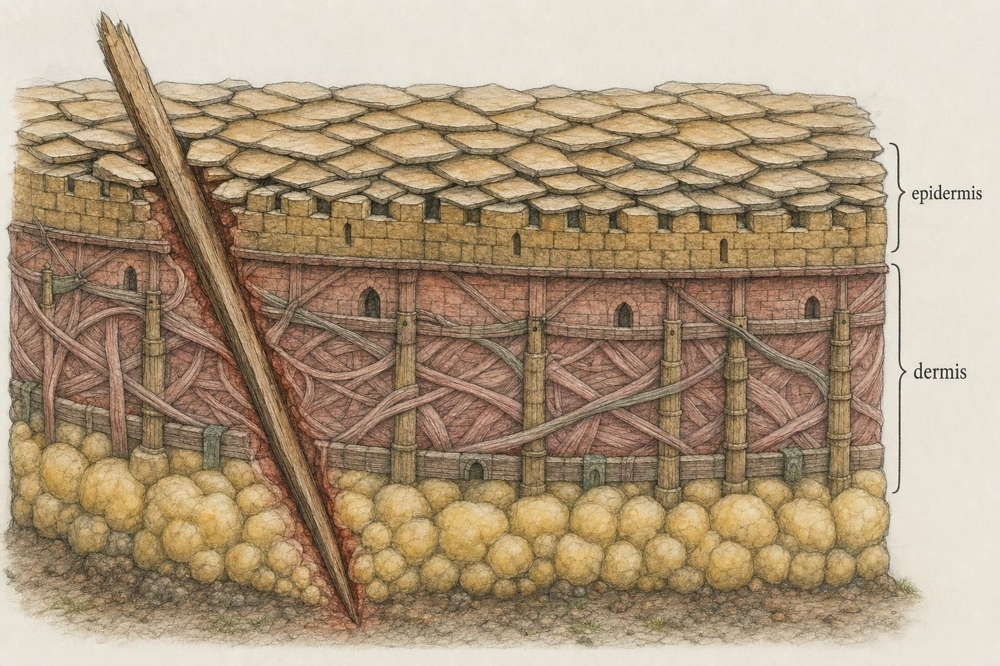
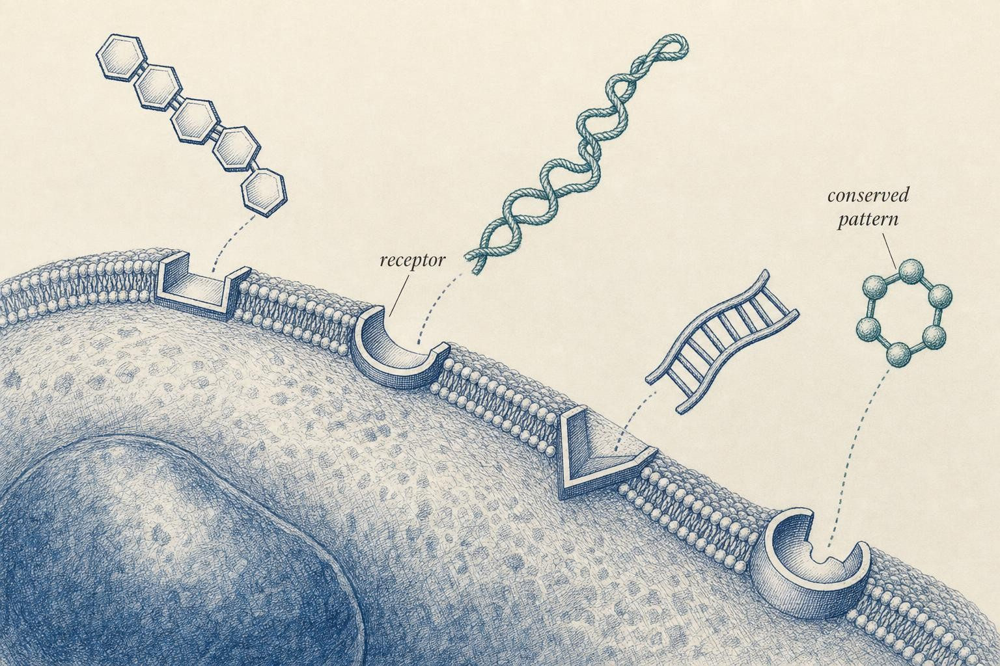
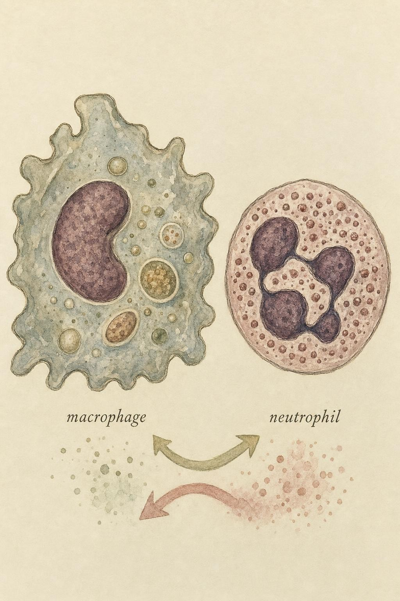

The Wall and the First Responders
How the body defends itself in the minutes before it has ever met the enemy.
A splinter goes into the pad of your thumb. It is a trivial event , a sliver of wood no bigger than an eyelash , but in the seconds after it breaks the skin, a defensive operation begins that is older than jaws, older than bone, older than the first fish. You will not feel it for an hour or two. By the time you do , the faint throb, the pink halo, the tightness of swelling , thousands of cells have already died at the wound, chemical alarms have propagated through the surrounding tissue, and a cascade of blood proteins has begun punching microscopic holes in bacterial membranes. None of these defenders has ever encountered this particular splinter or this particular bacterium. They do not need to. They were built, in the genome, to recognize the shapes that all invaders share.
This is the innate immune system: fast, ancient, and general-purpose. It is the subject of this chapter and the foundation of everything that follows. Before we can understand antibodies, lymphocytes, or the exquisite specificity of the adaptive response, we have to understand the wall , and the first responders who defend the breach.
This chapter follows three ordinary injuries, a splinter, a deeper cut, and an ordinary cold, because the same fortress defends against all three even though the assault differs. A splinter delivers a small bacterial load into the dermis; a deeper cut delivers much more into a wider wound; a cold is usually a virus entering through the airway, turned back mostly by defenses that never touch a phagocytosed particle. Comparing the three shows both the versatility of innate immunity and its honest limits.
What we are defending against, and with what
Let us define our terms cleanly, because the rest of the course rests on them. A pathogen is any organism or agent capable of causing disease in a host , bacteria, viruses, fungi, protozoan parasites, and worms. Not all microbes are pathogens; your body carries roughly as many bacterial cells as human ones, and the overwhelming majority are harmless or actively beneficial. Pathogenicity is not a property of being foreign , it is a property of causing harm, usually by invading tissue, stealing resources, or releasing toxins.
Whether a given microbe behaves as friend or foe often depends on where it ends up, not only on what it is. Escherichia coli living in the large intestine is an unremarkable resident that helps digest carbohydrates and manufactures vitamin K; the same bacterium in the bloodstream, urinary tract, or a surgical wound can cause serious infection. Location, host state, and dose all matter, which is part of why keeping microbes confined to the compartments where they belong is itself a major immunological achievement, accomplished largely without any dedicated immune cell taking action.
The immune system is the collection of cells, tissues, molecules, and barriers that protects a host from pathogens. It is conventionally split into two arms. The innate immune system is present from birth, responds within minutes to hours, and recognizes broad categories of threat rather than individual pathogens. The adaptive immune system , the subject of Chapter 2 , takes days to mount its first response but learns the identity of a specific pathogen and remembers it for years. These are not rival systems. The innate response is the origin of the adaptive one: as we will see, the same sentinel cells that fight the splinter's bacteria also carry the news to the adaptive system and switch it on.
A useful mental model, and the one we will build throughout this chapter, is a layered fortress. The outermost layer is a wall the pathogen must physically cross. Behind the wall stand chemical defenses that poison anything that gets over it. And stationed throughout the interior are cellular guards who neither sleep nor need briefing , they recognize an intruder on sight and either destroy it themselves or sound an alarm that brings reinforcements. Each layer buys time and reduces the number of pathogens that reach the next. Most invaders never make it past the first.
Much of this filtering happens invisibly. On an ordinary day you inhale, swallow, and touch enormous numbers of microorganisms, and the overwhelming majority never establish even a transient foothold, because the barrier layer stops them cold. The discomfort we associate with fighting an infection, the redness, the fever, the fatigue, mostly reflects the innermost layers of the fortress working hard, precisely because the outer layers have already failed at that specific location: a cold you can feel is evidence of a barrier breach, not evidence that your immune system was otherwise idle.

The layered barrier: most pathogens are stopped before they ever reach living tissue." data-image-idx="0" style="display:block;max-width:100%;max-height:75vh;height:auto;width:auto;margin:0 auto;cursor:pointer;">The wall: physical, chemical, and microbial barriers
The first and most underrated component of immunity is not a cell at all. It is a set of barriers so effective that the vast majority of would-be infections are prevented without any immune cell ever being activated. We can sort these barriers into three kinds: physical, chemical, and microbial.
Physical barriers
The skin is the largest organ of the body and the archetypal physical barrier. Its outermost sheet, the epidermis, culminates in the stratum corneum , layers of dead, flattened cells packed with the tough structural protein keratin and sealed together with lipids. This is not a living membrane a microbe can subvert; it is a dry, densely cross-linked, continuously shed brick wall. Cells slough off the surface constantly, carrying attached microbes away with them. Intact skin is nearly impervious to most bacteria, which is precisely why breaking it , a splinter, a scrape, a surgical incision , is such a reliable route to infection.
The stratum corneum is not static armor; it is continuously manufactured and discarded. Skin cells are born in the deepest layer of the epidermis, gradually flatten and fill with keratin as they are pushed toward the surface, die, and are shed, a journey that takes roughly a month from birth to loss. This turnover means microbes that merely adhere to the surface are usually carried away before they can establish themselves, which is why superficial scrapes that remove only dead outer layers rarely become infected. A deeper cut is a different event. Where a splinter creates a narrow, self-sealing puncture, a cut that severs the full thickness of the skin opens a wider channel, exposes the fatty tissue and small blood vessels beneath the dermis, and can deliver a much larger dose of skin and environmental bacteria directly into living tissue. The same barriers and the same cellular responders described in this chapter handle a cut, but they must handle more of everything, faster, which is part of why deep or heavily contaminated wounds carry a meaningfully higher infection risk than superficial ones and why they are often cleaned and, when appropriate, closed under medical care rather than left to seal on their own.
Internal surfaces cannot be made of dead keratinized cells, because they must absorb, secrete, and exchange gases. Instead they are lined by mucosal epithelia , living cell sheets whose neighbors are stitched together by tight junctions that seal the space between them. Wherever the outside world meets the inside , the gut, the airways, the urogenital tract , this epithelium is the wall. Layered over it is a second physical defense: mucus, a viscous gel of heavily glycosylated proteins called mucins. Mucus physically traps microbes, and in the airways a carpet of beating cilia sweeps the trapped material upward and out in a continuous conveyor known as the mucociliary escalator (Boudry et al., 2015).
The airway illustrates this system well, and it will matter again when we trace the course of an ordinary cold. Goblet cells, interspersed among the ciliated cells lining the airway, continuously produce mucus, while the cilia beat in coordinated waves that sweep mucus, and anything trapped in it, up toward the throat to be swallowed or expelled. A virus that lands here must penetrate the mucus and infect an epithelial cell before it can do anything at all; many inhaled virus particles never manage it and are cleared by the escalator alone, one reason exposure to a cold virus does not guarantee that a cold develops.
Chemical barriers
The wall is also chemically hostile. The stomach maintains a luminal pH near 1.5-2.0 , acidic enough to denature proteins and kill most ingested microbes before they reach the intestine. Skin secretions are mildly acidic and rich in fatty acids that inhibit bacterial growth. Tears, saliva, and mucus contain lysozyme, an enzyme that cleaves the peptidoglycan backbone of bacterial cell walls, rupturing them osmotically.
The most elegant chemical defenders are the antimicrobial peptides (AMPs) , short, often positively charged molecules such as the defensins and cathelicidins, secreted by epithelial cells and stored in immune-cell granules. Because bacterial membranes carry a strongly negative outer surface (a feature host cell membranes largely lack), cationic AMPs are drawn to microbes and insert into their membranes, forming pores that collapse the electrochemical gradient the cell needs to live. AMPs are, in effect, genetically encoded antibiotics that every one of us manufactures continuously (Boudry et al., 2015). Notice a theme already emerging: these defenses target features common to microbes but absent from , or minimized in , the host. That principle of exploiting the difference between microbial and self chemistry runs through the entire innate system.
These chemical defenses vary across life rather than forming a fixed wall. Stomach acid is markedly less effective in infants, older adults, and anyone taking acid-suppressing medication, part of why certain gut infections are more common in those groups, a reminder that unusual patterns of infection are a reason to involve a clinician rather than to guess.
The microbial barrier
The third barrier is alive and, remarkably, not ours. The commensal microbiota , the trillions of harmless bacteria that colonize skin and mucosal surfaces , defend their territory against pathogens through competitive exclusion. They occupy attachment sites, consume available nutrients, produce their own antimicrobial compounds, and maintain a local chemistry hostile to invaders. When this community is disrupted , for instance by broad-spectrum antibiotics , opportunistic pathogens such as Clostridioides difficile can bloom in the vacated niche and cause severe disease. The microbiota is a barrier we host but do not encode, a living outer rampart maintained by ecology rather than genetics.
The same principle operates on skin, where resident species such as Staphylococcus epidermidis produce antimicrobial molecules that inhibit more dangerous relatives such as Staphylococcus aureus. The commensal community also helps calibrate the immune system's sense of background noise versus danger, a relationship still under active study, so we will state plainly what is well established, competitive exclusion and some degree of immune calibration, and leave more speculative microbiome claims for another course.
Recognition without memory: PRRs, PAMPs, and DAMPs
Suppose the barrier fails. The splinter drives bacteria past the skin and into living tissue. Now the innate cellular defenses must act , but they face a deep problem. There are millions of possible microbial species and countless strains. How can a cell that has never seen this bacterium, and whose genome cannot possibly contain a dedicated recognition molecule for every conceivable microbe, know that danger has arrived?
The answer is one of the most important ideas in modern immunology, and it was largely wrong in the textbooks until surprisingly recently. In a 1989 Cold Spring Harbor address that has become legendary, Charles Janeway argued that the immune system must possess a set of germline-encoded receptors , receptors written directly into the genome, the same in every individual , that recognize not specific pathogens but the conserved molecular signatures shared by whole classes of pathogens (Janeway, 1989). He called these receptors pattern recognition receptors (PRRs), and he called the molecular signatures they detect pathogen-associated molecular patterns, or PAMPs.
The logic is beautiful in its economy. A PAMP is a molecule that is (1) made by microbes but not by host cells, (2) essential to microbial survival so it cannot easily be mutated away, and (3) shared across many microbes. Consider lipopolysaccharide (LPS), a component of the outer membrane of all Gram-negative bacteria. No human cell makes LPS; every Gram-negative bacterium does; a bacterium cannot discard it without dying. A single receptor tuned to LPS therefore reports, reliably and instantly, "a Gram-negative bacterium is present" , without the cell needing to know which one. Other canonical PAMPs include peptidoglycan and lipoteichoic acid (bacterial cell walls), flagellin (the protein of bacterial flagella), and unmethylated CpG DNA and double-stranded RNA (nucleic-acid signatures characteristic of microbes and viruses but rare or absent in the host cytoplasm).
Janeway's hypothesis sat mostly unproven for a decade until the discovery of the Toll-like receptors (TLRs) , a family of PRRs, homologous to a receptor first found in fruit flies, that recognizes distinct PAMPs. TLR4 detects LPS; TLR5 detects flagellin; TLR3, TLR7, and TLR9 sit inside cells and detect viral nucleic acids. When a TLR binds its PAMP, it triggers an intracellular signaling cascade that switches on genes for inflammatory cytokines , secreted proteins that coordinate the response , and, in specialized cells, begins the maturation program that will later activate the adaptive immune system (Medzhitov, 2001; Janeway & Medzhitov, 2002). This work confirmed Janeway's prediction so completely that it earned a share of the 2011 Nobel Prize, and it is why we now treat innate recognition as the trigger for essentially all immunity (Suresh & Mosser, 2013).

Pattern recognition: germline-encoded receptors read molecular shapes common to whole classes of microbes." data-image-idx="1" style="display:block;max-width:100%;max-height:75vh;height:auto;width:auto;margin:0 auto;cursor:pointer;">It is worth being explicit about the numbers involved, because the contrast with adaptive immunity matters throughout this course. The human genome encodes on the order of ten Toll-like receptors and a modest number of other pattern recognition receptor families, a repertoire fixed at birth and identical, gene for gene, in every cell of a given type. This is what "germline-encoded" means: the receptors are specified directly by inherited genes, not assembled during your lifetime. A finite set of receptors, tuned to conserved patterns, can still cover an enormous range of threats because those patterns are shared across huge numbers of species. What this system cannot do is learn a brand-new pattern it was not built to recognize, or remember a specific pathogen it met last year, a capability that belongs to the adaptive system in Chapter 2, whose receptors are generated by genetic shuffling unique to each lymphocyte rather than fixed at birth. Innate recognition is fast because it is fixed; adaptive recognition takes longer to arise precisely because it is not.
PRR families beyond the TLRs
The TLRs are the most famous PRRs, but they are one family among several, and knowing the division of labor helps make sense of how cells survey different compartments. TLRs monitor the cell surface and the interiors of endosomes , the vesicles into which engulfed material is delivered. The NOD-like receptors (NLRs) patrol the cytoplasm, detecting bacterial cell-wall fragments and cell-stress signals that have reached the cell's interior; certain NLRs assemble into a multiprotein platform called the inflammasome that drives a particularly potent inflammatory output. The C-type lectin receptors (CLRs) recognize carbohydrate structures on fungal and other cell walls. Together these families provide surveillance of every location a pathogen might occupy , outside the cell, inside a vesicle, or loose in the cytoplasm (Suresh & Mosser, 2013).
DAMPs: recognizing damage, not just invaders
There is a second, complementary way a cell can know something is wrong. Many PRRs also detect damage-associated molecular patterns (DAMPs) , molecules that are normally hidden safely inside healthy cells and only appear in the extracellular space when a cell dies violently. ATP, certain nuclear proteins, and fragments of the extracellular matrix all serve as DAMPs. Their logic is different from that of PAMPs: a DAMP does not say "a microbe is here," it says "a cell just died in a way it should not have." The splinter itself causes this kind of damage the instant it enters, so DAMP signaling begins even before any bacterium is recognized. This is why sterile injuries , a bruise, a burn, a torn muscle , still produce inflammation. The innate system responds to danger, whether that danger is an invader or an injury (Suresh & Mosser, 2013). This dual sensitivity, to PAMPs and to DAMPs, is also why a completely sterile injury such as a severe burn or a crush injury can produce a whole-body inflammatory response with no infection present at all; the danger signal does not require a pathogen, only damaged self.
Detecting a virus: the interferon response
Viruses pose a distinct recognition problem, because a virus by itself is not a self-sufficient cell; it hijacks a host cell's own machinery to make copies of itself, and there is no bacterial-style cell wall to detect. Instead, the tell-tale sign is often genetic material appearing somewhere it should not be: double-stranded RNA, rarely made by host cells but generated as a byproduct of many viral replication cycles, or DNA loose in the cytoplasm rather than packaged in the nucleus or mitochondria. Intracellular Toll-like receptors (TLR3, TLR7, TLR9) and a separate family of cytoplasmic sensors called RIG-I-like receptors detect these signatures inside infected cells.
When they fire, the dominant output is a class of signaling proteins called type I interferons. An infected cell that produces type I interferon broadcasts a warning to its neighbors, which shut down protein-synthesis pathways that viruses depend on and become harder to infect, blunting spread through a tissue even before any specialized killer cell arrives. Type I interferons also activate natural killer cells, met later in this chapter, and contribute to the aches and fatigue of a cold or flu, symptoms that are, in part, a consequence of your own interferon response rather than of the virus directly damaging distant tissue.
The cellular first responders: phagocytes
Recognition is only useful if it is coupled to action. The oldest and most fundamental action the immune system can take is to eat the invader. A cell that engulfs and digests particles , including whole microbes , is a phagocyte (from the Greek for "eating cell"), and the process is phagocytosis. The concept dates to Élie Metchnikoff in the 1880s, who watched motile cells in a transparent starfish larva swarm around a rose thorn he had pushed into it , an observation that founded cellular immunology and won him a Nobel Prize (Silva, 2009).
Phagocytosis proceeds in a stereotyped sequence. A PRR (or a tag deposited on the microbe , we will meet these tags shortly) binds the particle. The phagocyte's membrane extends around it, engulfs it, and pinches off an internal vesicle called a phagosome. The phagosome then fuses with lysosomes , acidic vesicles full of degradative enzymes , to form a phagolysosome. Inside this compartment the microbe is destroyed by a battery of weapons: acidification, digestive enzymes, antimicrobial peptides, and a burst of reactive oxygen species generated by an enzyme complex in the vesicle membrane, a process called the respiratory burst. Two professional phagocytes dominate the innate response, and understanding the division of labor between them is essential.
The macrophage: sentinel and cleanup crew
The macrophage ("big eater") is a long-lived phagocyte that resides permanently in tissues , the skin, lungs, liver, gut, and everywhere else. It is the standing garrison of the fortress. Because macrophages are already present when a breach occurs, they are typically the first cells to detect a pathogen. When a tissue macrophage's PRRs engage a PAMP, it does three things at once: it begins phagocytosing the invader, it secretes inflammatory cytokines and chemokines that summon reinforcements and dilate local blood vessels, and , in the case of specialized antigen-presenting macrophages and their cousins the dendritic cells , it begins preparing to carry information about the pathogen to the adaptive immune system.
Not every macrophage has lived in its tissue since before birth. Many populations are seeded during embryonic development and maintain themselves locally, but they can also be reinforced by the monocyte, a related phagocyte that circulates in the blood and differentiates into a macrophage (or, in some circumstances, a dendritic cell) upon entering inflamed tissue. During a large infection, monocytes are recruited from the blood much as neutrophils are, arriving somewhat later and helping to sustain, and eventually resolve, the response after the neutrophil wave has crested.
Macrophages are also the cleanup crew. After a battle they phagocytose dead cells, cellular debris, and spent neutrophils, and they secrete factors that promote tissue repair. A single cell type thus spans the entire arc of the response: sentinel at the start, effector in the middle, and undertaker and builder at the end (Silva, 2009). We will return to the macrophage's role in resolving inflammation in Chapter 3; for now, hold onto its identity as the resident sentinel that both fights and coordinates.
The neutrophil: the disposable frontline soldier
The neutrophil is the most abundant white blood cell in human blood and the first professional phagocyte recruited from the bloodstream to a site of infection. Neutrophils are not resident in healthy tissue; they patrol the circulation and are called out only when needed. Once summoned, they arrive in enormous numbers within hours , the classic Kolaczkowska and Kubes (2013) review documents their dominance of the early cellular infiltrate. They are short-lived, surviving only hours to a few days, and this disposability is a design feature, not a flaw. The neutrophil carries weapons too dangerous to keep on standby indefinitely, uses them in a rapid, self-limiting burst, and then dies.
Neutrophils deploy three antimicrobial strategies. First, phagocytosis, as described above. Second, degranulation , the release of preformed granules packed with antimicrobial peptides and enzymes directly into the extracellular space or into the phagosome. Third, and most striking, NETosis: a dying neutrophil can expel its own decondensed DNA studded with antimicrobial proteins, forming a sticky web called a neutrophil extracellular trap (NET) that ensnares and kills bacteria in the extracellular space (Kolaczkowska & Kubes, 2013). The yellow-white material we call pus is, in large part, the accumulation of spent neutrophils, tissue debris, and killed microbes , the visible residue of the frontline soldiers who have done their work and died.
Neutrophil granules are not a single uniform store. Primary (azurophilic) granules contain myeloperoxidase, an enzyme that combines with hydrogen peroxide from the respiratory burst to generate hypochlorous acid, essentially bleach, inside the phagolysosome, while secondary and tertiary granules carry additional enzymes and antimicrobial peptides released during degranulation. The same chemistry that dissolves a bacterium can damage nearby healthy tissue if it leaks in quantity, one reason the neutrophil's short lifespan and rapid, controlled death are a built-in safety mechanism rather than an incidental detail.
How a neutrophil gets to the wound: the adhesion cascade
Recruitment is not passive drift. A neutrophil tumbling through the bloodstream at high speed must find, stop at, and cross the vessel wall precisely at the site of infection, and it does so through the ordered leukocyte adhesion cascade. Cytokines from resident macrophages cause nearby endothelial cells (the cells lining blood vessels) to display adhesion molecules called selectins. These grab passing neutrophils loosely, forcing them to roll along the vessel wall, slowing down. Signals from the inflamed tissue then activate integrins on the neutrophil surface, which bind endothelial partners firmly and bring the cell to a full stop , arrest. Finally the neutrophil squeezes between endothelial cells and out of the vessel , transmigration , and follows a rising chemical gradient of chemoattractants (including bacterial products and, crucially, the complement fragment C5a) directly to the source, a directed movement up a chemical gradient called chemotaxis (Kolaczkowska & Kubes, 2013). This rolling → arrest → transmigration → chemotaxis sequence is one of the most reliably reproduced choreographies in all of cell biology, and it is what the Breach Simulator above is animating when neutrophil counts climb.
Two phagocytes, one system
Why keep both a resident macrophage and a recruited neutrophil? Because their properties are complementary (Silva, 2009). The macrophage is always present, long-lived, and coordinating , but limited in number at any one site. The neutrophil is absent until summoned but then floods in by the millions, deploys overwhelming firepower, and self-destructs before its toxic arsenal can damage healthy tissue for long. The macrophage detects the threat and calls; the neutrophil answers in force; the macrophage then clears the battlefield, including the neutrophils' own corpses. Metchnikoff's single "phagocyte" concept, refined over a century, resolves into a cooperative myeloid system in which each cell does what the other cannot.
There is a third myeloid cell that shares much of this lineage and this recognition toolkit, but whose defining job is different from either the macrophage's or the neutrophil's: it captures evidence rather than simply destroying the culprit, and carries that evidence to where the adaptive immune system can see it. That cell, the dendritic cell, is where we turn next.

Complementary phagocytes: the resident sentinel and the recruited soldier." data-image-idx="2" style="display:block;max-width:100%;max-height:75vh;height:auto;width:auto;margin:0 auto;cursor:pointer;">The dendritic cell: informant and courier
Named for the branching, tree-like projections that radiate from its surface (dendrites comes from the Greek for "tree"), the dendritic cell is a phagocyte built less for killing in bulk than for reconnaissance. Like the macrophage, it resides in tissues, particularly at surfaces exposed to the outside world such as the skin and the linings of the airway and gut, and it carries the same family of pattern recognition receptors described earlier in this chapter. When those receptors engage a PAMP or a DAMP, the dendritic cell phagocytoses the material, just as a macrophage would. What happens next is where the two cell types diverge, and the divergence is the single most important fact about the dendritic cell: it is the primary bridge between the innate immune system described in this chapter and the adaptive immune system described in the next.
Capturing evidence, not just destroying it
Where a macrophage or neutrophil digests an engulfed microbe as completely and quickly as possible, purely to eliminate it, a dendritic cell partially digests its cargo and preserves fragments of it, small pieces of microbial protein called antigens. It loads these fragments onto specialized display molecules on its own surface, part of a system called the major histocompatibility complex (MHC) that Chapter 2 will cover in detail. For now, the essential point is functional rather than molecular: the dendritic cell converts "a pathogen was here" into a portable, physical exhibit that another cell can inspect.
Maturation: a one-way ticket to the lymph node
Before it encounters a pathogen, a dendritic cell sitting in the skin or gut is described as immature: highly active at sampling its surroundings, but a poor communicator. The moment its pattern recognition receptors detect a genuine threat, the cell undergoes a transformation called maturation: it downregulates further sampling, ramps up its display machinery, and changes its surface receptors so it becomes responsive to chemical cues in lymphatic vessels rather than in the tissue where it started. A mature dendritic cell detaches, enters a nearby lymphatic vessel, and travels, carrying its captured antigen, to the nearest draining lymph node, a small organ that functions as a meeting hall for the immune system. This migration takes roughly a day, part of why the adaptive response that depends on it takes days to begin rather than hours (Banchereau & Steinman, 1998).
Inside the lymph node, the mature dendritic cell displays its captured antigen to circulating T lymphocytes, cells of the adaptive immune system introduced properly in Chapter 2. Only a vanishingly small fraction of a person's T lymphocytes carry a receptor that matches any given antigen, so the dendritic cell's task is essentially a matchmaking problem: present the evidence to as many passing T lymphocytes as possible until the rare correct match is found. Without this courier step, a T lymphocyte with the right receptor might never encounter its target, since the infection sits in the skin or gut, not circulating through the lymph node.
Two flavors of sentinel
Not all dendritic cells are identical. Conventional dendritic cells are the antigen-capturing couriers described above and form the main bridge to T lymphocyte activation. A second, less numerous population called plasmacytoid dendritic cells specializes in detecting viral nucleic acids and responds by producing enormous quantities of type I interferon, more than almost any other cell type, making it a major contributor to the antiviral interferon response introduced earlier in this chapter. Both populations are doing the same underlying job this chapter has emphasized throughout: recognizing conserved molecular patterns and converting that recognition into a coordinated response, whether a chemical alarm or a physical exhibit carried to a distant courtroom.
Natural killer cells: policing the body's own cells
Every cell type described so far in this chapter, the phagocytes, the dendritic cell, the soluble proteins of complement, deals with threats that are, in some molecular sense, foreign: a bacterial cell wall, a viral nucleic acid, a fungal sugar. The natural killer (NK) cell solves a different and in some ways harder problem. It detects and destroys the body's own cells when those cells have been altered by a virus or by cancerous transformation, without any foreign molecule to recognize at all. A virus-infected cell, after all, is still built almost entirely from the host's own proteins; the danger is not a foreign substance on its surface but the fact that the cell itself has been hijacked. NK cells belong to a broader family of innate white blood cells called innate lymphoid cells (ILCs), and despite superficially resembling lymphocytes of the adaptive system under a microscope, they carry no rearranged, pathogen-specific receptors; their recognition strategy is entirely innate and germline-encoded, consistent with everything else in this chapter (Vivier et al., 2011).
The missing self hypothesis
How can a cell recognize "infected" or "cancerous" without a fixed molecular target? The proposed and now well-supported answer is that natural killer cells monitor for the absence of a normal signal rather than the presence of an abnormal one. Almost every healthy nucleated cell in the body constantly displays a class of surface molecules called major histocompatibility complex class I (MHC class I) molecules, which Chapter 2 will revisit as the platform adaptive immunity uses to inspect a cell's internal contents. Natural killer cells carry inhibitory receptors that recognize MHC class I and, when engaged, tell the natural killer cell to stand down. A healthy cell, richly covered in MHC class I, is therefore constantly signaling "leave me alone," and the natural killer cell obeys.
Many viruses actively suppress a host cell's MHC class I display as a strategy to hide from the adaptive immune system's cytotoxic T lymphocytes, which also depend on MHC class I to detect infection (a strategy previewed here and explained fully in Chapter 2). This is where natural killer cells find their opening: a virus-infected cell with reduced MHC class I loses its "leave me alone" signal, the inhibitory receptor no longer fires, and competing activating receptors, which detect stress molecules that many infected or transformed cells display, tip the balance toward killing. This logic is called the missing self hypothesis: it is not the presence of a foreign pattern that triggers the attack, but the disappearance of a normal one, monitored continuously and automatically. Many cancerous cells independently lose MHC class I display or acquire similar stress markers, which is why natural killer cells also contribute to tumor surveillance, though the details of that role extend well beyond this course.
How a natural killer cell kills
Once a natural killer cell commits to killing a target, it does so with precision for a cell that has no memory of ever having met that target before. It forms a tight junction with the target called an immunological synapse and releases specialized granules directly into that narrow space, largely sparing neighboring healthy cells. The granules contain perforin, a protein that inserts into the target's membrane and forms a pore, and granzymes, enzymes that pass through that pore and trigger apoptosis, a controlled, self-directed form of cell death also called programmed cell death. Apoptosis is comparatively tidy: the cell disassembles itself from within and is cleared by phagocytes, unlike the messy rupture caused by the complement membrane attack complex or a bacterial toxin, which limits the viral progeny and debris released into surrounding tissue.
More than a killer: cytokine production
Natural killer cells also secrete large amounts of interferon-gamma, distinct from the type I interferons described earlier, which amplifies nearby macrophage killing and helps shape the adaptive response that follows. They are, in short, doing two jobs during the first days of a viral infection: eliminating some infected cells directly and priming other defenders to fight harder. An honest caveat is worth stating here: popular claims about "boosting" natural killer cell activity with supplements or specific foods outrun the evidence, this pathway is regulated by a dense web of receptors and signals only partly understood, and no supplement reliably improves infection resistance through it in a healthy person. What is better supported is more modest, adequate sleep and stress management are associated with better immune function broadly, reason enough to prioritize the basics over a shortcut.
The complement system: a cascade of blood proteins
Cells are not the only fast defenders. Circulating continuously in your blood and tissue fluid is a set of some thirty inactive proteins, mostly made by the liver, called the complement system. The name is historical , nineteenth-century researchers found that this heat-sensitive component of serum "complemented" the action of antibodies , but the system is far more ancient and general than antibodies, and it functions as a core arm of innate immunity in its own right.
Complement is a cascade: a series of proteins in which each activated protein cleaves and activates the next, like a row of dominoes. Cascades have two great virtues. They amplify , one activated enzyme can cleave many copies of the next protein, so a small triggering event produces a large response , and they are fast, because the components are already present, floating in an inactive form, waiting. The central protein of the whole system is C3. Everything upstream exists to cleave C3; everything downstream flows from that cleavage (Merle et al., 2015).
Three pathways, one convergence
Complement can be triggered in three ways, and appreciating that they converge is the key to understanding the whole system.
The alternative pathway is the most primitive and requires no specific recognition at all. C3 spontaneously and continuously undergoes low-level activation in the blood , a process called "tick-over." On a host cell surface, regulatory proteins immediately shut this down; on a microbial surface, which lacks those regulators, the activated C3 fragment sticks and the cascade proceeds. The alternative pathway is thus a default, always-on surveillance that distinguishes self from non-self by the absence of host protection on the target.
The lectin pathway is triggered when a soluble PRR called mannose-binding lectin recognizes specific sugar patterns (a PAMP) on microbial surfaces and, upon binding, activates the cascade. The classical pathway is triggered when the protein C1q binds to antibodies that are already coating a microbe , which links complement to the adaptive immune system and explains its original, antibody-associated name. All three pathways do the same thing: they generate an enzyme complex called a C3 convertase on the microbial surface, which cleaves C3 into two fragments, C3a and C3b. From that convergence point, the outcomes are identical regardless of how the cascade was started (Merle et al., 2015).
Three outcomes: tag, recruit, punch
What does complement actually accomplish? Three things, and it is worth naming each mechanistically.
Opsonization (tag). The C3b fragment covalently attaches to the microbial surface, coating it. Phagocytes carry receptors for C3b, so a C3b-coated microbe is far more efficiently recognized and engulfed. A tag that marks a target for phagocytosis is called an opsonin (from the Greek "to prepare for eating"), and C3b is the most important one in the body. This is the tag that lets a neutrophil grab a bacterium it has no dedicated PRR for.
Anaphylatoxins (recruit). The small fragments cleaved off during the cascade , C3a and especially C5a , diffuse away and act as potent inflammatory signals. C5a is one of the strongest chemoattractants known; it is a major part of the gradient that guides neutrophils to the site, and it also increases vascular permeability, contributing to the swelling and redness of inflammation. Here is the direct molecular link between complement and the cellular response you watched in the Breach Simulator: complement activation literally helps summon the neutrophils.
Membrane attack complex (punch). The late components C5b, C6, C7, C8, and multiple copies of C9 assemble into a ring-shaped pore called the membrane attack complex (MAC) that inserts into the microbial membrane and punches a hole through it. Water and ions rush in, and the cell lyses. The MAC is especially important against certain Gram-negative bacteria; individuals who cannot form it are prone to specific bacterial infections , another instance where a defined molecular deficiency produces a recognizable clinical pattern, and another reason recurrent infections warrant professional evaluation rather than guesswork (Merle et al., 2015).
Protecting host cells from friendly fire
A cascade this powerful, and this promiscuous in how it starts (recall that the alternative pathway fires spontaneously and continuously), would be catastrophic without tight restraint on host tissue. Healthy human cells display regulatory proteins, including decay-accelerating factor and a protein called protectin, that dismantle complement components before they can build a stable convertase or a membrane attack complex on a self surface. Microbial surfaces generally lack these regulators, which is why complement concentrates on the invader rather than spreading across healthy tissue. When these regulators are missing due to rare genetic conditions, complement attacks the body's own cells, particularly red blood cells, illustrating how much active restraint the system depends on to work safely (Merle et al., 2015).
Notice how the complement system compresses the whole logic of innate immunity into a single molecular cascade: it recognizes non-self (three pathways), it tags and destroys (opsonization and MAC), and it recruits the cellular responders (anaphylatoxins). It is, in miniature, the entire fortress operating in the fluid phase.
Putting it together: three worked examples
We can now trace the entire sequence from breach to resolution as connected stories that tie every concept in this chapter together, and comparing three different injuries will show how the same fortress adapts its response to the size and nature of the threat.
Example one: the splinter, minute by minute
Second 0. The splinter tears through the stratum corneum and epidermis, carrying skin bacteria into the living dermis. The physical barrier has failed locally. Epithelial cells are torn open, spilling their contents , DAMPs , into the tissue.
Minutes. Resident macrophages in the dermis detect the intruders. Their TLRs bind bacterial PAMPs (peptidoglycan, LPS); their receptors also sense the DAMPs from the wound. They begin phagocytosing bacteria and start secreting inflammatory cytokines. Simultaneously, complement in the tissue fluid engages the invaders: the alternative pathway fires on the unprotected bacterial surfaces, the lectin pathway recognizes their sugars, C3b begins coating them, and C3a and C5a diffuse outward.
Tens of minutes to hours. Cytokines and C5a act on the local blood vessels: they dilate (bringing more blood , hence redness and heat) and become leaky (letting fluid into the tissue , hence swelling). Endothelial cells display selectins. Neutrophils in the passing blood begin to roll, arrest, and transmigrate, then follow the C5a and bacterial gradients to the splinter. This is the visible birth of inflammation, which Chapter 3 will treat in full , but you can already see that inflammation is simply what innate activation looks like from the outside.
Hours to a day. Neutrophils dominate the site, phagocytosing C3b-tagged bacteria, degranulating, and casting NETs. Bacteria are killed in enormous numbers. Spent neutrophils accumulate as pus. Meanwhile, dendritic cells and macrophages that engulfed bacteria begin migrating toward lymph nodes, carrying pieces of the pathogen , the first step of the handoff to the adaptive immune system, and the bridge into Chapter 2.
Days. As bacteria are cleared, the signals that recruited neutrophils fade. Macrophages switch toward a repair phenotype, clearing debris and spent neutrophils and promoting healing. The redness recedes, the swelling drains, and the tissue rebuilds. If all goes well, you are left with nothing but the memory of a sore thumb , and, invisibly, in the lymph nodes, the beginnings of a specific immune memory that did not exist before.
Example two: a deeper cut
Now compare the splinter to a kitchen knife slip that cuts deeply enough to bleed freely. The physics of the injury differ in an important way: a much larger surface of living tissue is exposed at once, a correspondingly larger population of skin and environmental bacteria is introduced, and small blood vessels are damaged directly, so DAMP release and local clotting begin immediately alongside microbial recognition. The same barrier, chemical, and cellular sequence described for the splinter unfolds again: resident macrophages and complement engage the invaders within minutes, cytokines and anaphylatoxins open local vessels, and neutrophils arrive within hours. What differs is scale. A larger bacterial load produces stronger and more sustained pattern recognition receptor signaling, a bigger neutrophil recruitment, and, correspondingly, more of the classic signs of inflammation, more redness, more heat, more swelling, more pain, simply because more of the fortress's defenders are engaged at once.
Most clean cuts, promptly washed and, if needed, closed, resolve exactly like the splinter, just louder. A wound that is deep, heavily contaminated, caused by a dirty object, or located over a joint carries a meaningfully higher risk that local innate defenses will be overwhelmed before the invaders are contained, allowing infection to spread through the tissue (a condition called cellulitis when it involves skin and soft tissue) or, rarely, into the bloodstream. Recognizing that possibility, not diagnosing it yourself, is the responsible use of this chapter: redness spreading well beyond the wound, red streaking, pain that worsens rather than gradually improves after the first day, fever, or a wound that will not stop producing pus are reasons to see a clinician, not signs to wait out. The immune system described here is powerful, but it is not infallible.
Example three: an ordinary cold
A cold shows a different side of the same fortress, because most common cold viruses, rhinoviruses foremost among them, enter through the airway rather than through broken skin, and because the primary threat is a virus rather than a bacterium.
Minutes to hours. Viral particles land on the mucus layer of the nasal and upper airway epithelium. Some are trapped and cleared by the mucociliary escalator without ever infecting a cell. Others penetrate the mucus and bind receptors on epithelial cells, entering and beginning to replicate. As replication proceeds, infected cells generate double-stranded RNA and other viral signatures that intracellular Toll-like receptors and RIG-I-like receptors detect, triggering the production of type I interferon described earlier. Interferon spreads to neighboring cells, putting them into an antiviral state before the virus reaches them.
Roughly a day. Plasmacytoid dendritic cells, recruited to the site, add to the interferon signal. Natural killer cells, activated in part by interferon, begin eliminating infected cells that have downregulated their MHC class I display, exactly as the missing self hypothesis predicts. Conventional dendritic cells that have captured viral antigen begin migrating to the draining lymph node in the neck, carrying evidence that will eventually activate the adaptive response covered in Chapter 2. Cytokines released during this process, including interferons themselves, act on the brain's temperature-regulating centers and contribute to the fatigue, muscle aches, and mild fever that make a cold feel like an illness, symptoms produced by your own defenses as much as by the virus.
A day to several days. Local inflammation increases mucus production and dilates blood vessels in the nasal lining, producing the congestion, runny nose, and sneezing familiar to everyone who has had a cold. Sneezing and coughing are not incidental discomforts; they are reflexive, forceful expulsions that clear virus-laden mucus from the airway, a physical barrier defense in dynamic action rather than a passive structure. Because the primary battle is fought by barriers, interferons, and natural killer cells rather than by phagocytosis of a solid particle, a cold generally does not produce pus the way a splinter or a cut can, though secondary bacterial infection of already-inflamed sinuses does occur and can add that feature.
Roughly a week to ten days. As interferon and natural killer cell activity contain viral replication, and the adaptive response beginning in the lymph node matures, viral load falls and symptoms resolve. Most colds end here without incident. As with the deeper cut, honesty requires naming the limit: a very high or prolonged fever, difficulty breathing, symptoms that worsen sharply after initially improving, or illness lasting well beyond the ordinary week or so are reasons to seek medical evaluation rather than to self-treat based on an introductory course.
The immune system evolved to recognize infection, not to recognize non-self. The distinction that matters is not self versus non-self, but infectious non-self versus non-infectious self.
Paraphrasing Charles Janeway's central insight (Janeway, 1989; Janeway & Medzhitov, 2002)
Key Takeaways
- Innate immunity is fast (minutes to hours), present from birth, and recognizes broad classes of threat rather than individual pathogens , it is the foundation on which adaptive immunity is built.
- Defense is layered: physical barriers (skin, mucosal epithelia, mucus), chemical barriers (stomach acid, lysozyme, antimicrobial peptides), and a living microbial barrier (the commensal microbiota) stop most pathogens before any cell is activated.
- Cells detect danger without prior exposure using germline-encoded pattern recognition receptors (PRRs) that bind conserved pathogen-associated molecular patterns (PAMPs) and damage-associated molecular patterns (DAMPs). Janeway predicted this; the Toll-like receptors confirmed it.
- Two professional phagocytes cooperate: the resident, long-lived macrophage detects, coordinates, and cleans up; the recruited, short-lived, disposable neutrophil arrives in force via the leukocyte adhesion cascade and deploys phagocytosis, degranulation, and NETs.
- The complement cascade converges from three activation pathways onto C3 and delivers three outcomes: opsonization (tag with C3b), recruitment (C3a/C5a anaphylatoxins), and lysis (the membrane attack complex), and is itself restrained on host cells by regulatory proteins that prevent friendly fire.
- Dendritic cells share the macrophage's pattern recognition receptors but specialize in a different job: capturing antigen, maturing, and migrating to lymph nodes to activate the adaptive immune system covered in Chapter 2.
- Natural killer cells patrol for the body's own cells that have been altered by infection or cancer, using the missing self hypothesis (loss of MHC class I signaling) rather than recognition of a foreign pattern, and kill by triggering apoptosis through perforin and granzymes.
- Type I interferons, produced by infected cells and by plasmacytoid dendritic cells in response to viral nucleic acid, put neighboring cells into an antiviral state and activate natural killer cells; many of the felt symptoms of a viral illness are consequences of this response rather than of direct viral damage.
- Recurring theme: innate defenses exploit features shared by microbes but absent from the host , a principle visible in antimicrobial peptides, PAMP recognition, and complement's self/non-self discrimination.
- Innate defenses are powerful but not infallible. The size and depth of a wound, and the trajectory of symptoms in an illness, matter; recognizing signs of spreading or serious infection is a reason to seek medical care, not a puzzle to solve alone.
The dendritic cells carrying captured antigen toward the lymph nodes, alongside the natural killer cells already policing infected cells directly, are the courier service and the advance guard between two worlds. In Chapter 2 we follow the couriers into the lymph node and meet the specialist reinforcements , the T and B lymphocytes , whose defining trick is exactly the one the innate system lacks: the ability to recognize a single, specific pathogen and remember it for a lifetime. We will see that adaptive immunity does not replace the fortress; it is summoned by it.
References
Banchereau, J., & Steinman, R. M. (1998). Dendritic cells and the control of immunity. Nature, 392(6673), 245-252. https://doi.org/10.1038/32588
Boudry, G., Charton, E., Le Huerou-Luron, I., Ferret-Bernard, S., Le Gall, S., Even, S., & Blat, S. (2015). Mucosal physical and chemical innate barriers: Lineage of defense against gastrointestinal pathogens. In V. R. Preedy & R. R. Watson (Eds.), Digestive system: Diseases and impacts. Elsevier. https://www.sciencedirect.com/science/article/abs/pii/S1044532315000196
Janeway, C. A., Jr. (1989). Approaching the asymptote? Evolution and revolution in immunology. Cold Spring Harbor Symposia on Quantitative Biology, 54, 1-13. https://symposium.cshlp.org/content/54/1
Janeway, C. A., Jr., & Medzhitov, R. (2002). Innate immune recognition. Annual Review of Immunology, 20, 197-216. https://doi.org/10.1146/annurev.immunol.20.083001.084359
Kolaczkowska, E., & Kubes, P. (2013). Neutrophil recruitment and function in health and inflammation. Nature Reviews Immunology, 13(3), 159-175. https://doi.org/10.1038/nri3399
Medzhitov, R. (2001). Toll-like receptors and innate immunity. Nature Reviews Immunology, 1(2), 135-145. https://doi.org/10.1038/35100529
Merle, N. S., Church, S. E., Fremeaux-Bacchi, V., & Roumenina, L. T. (2015). Complement system part I - Molecular mechanisms of activation and regulation. Frontiers in Immunology, 6, 262. https://doi.org/10.3389/fimmu.2015.00262
Murphy, K., & Weaver, C. (2017). Janeway's immunobiology (9th ed.). Garland Science.
Silva, M. T. (2009). When two is better than one: Macrophages and neutrophils work in concert in innate immunity as complementary and cooperative partners of a myeloid phagocyte system. Journal of Leukocyte Biology, 87(1), 93-106. https://doi.org/10.1189/jlb.0809549
Suresh, R., & Mosser, D. M. (2013). Pattern recognition receptors in innate immunity, host defense, and immunopathology. Advances in Physiology Education, 37(4), 284-291. https://doi.org/10.1152/advan.00058.2013
Vivier, E., Raulet, D. H., Moretta, A., Caligiuri, M. A., Zitvogel, L., Lanier, L. L., Yokoyama, W. M., & Ugolini, S. (2011). Innate or adaptive immunity? The example of natural killer cells. Science, 331(6013), 44-49. https://doi.org/10.1126/science.1198687